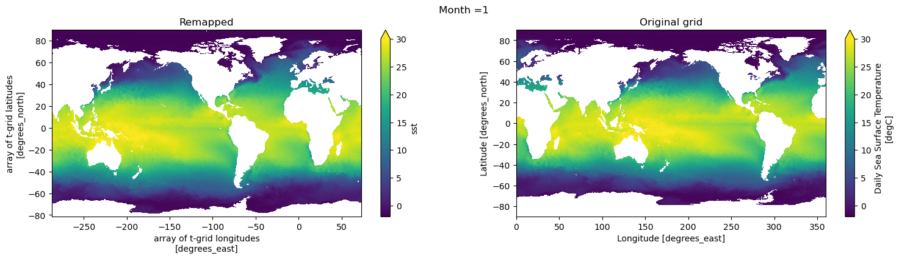
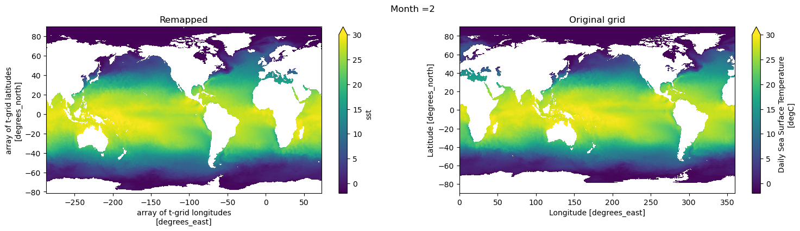
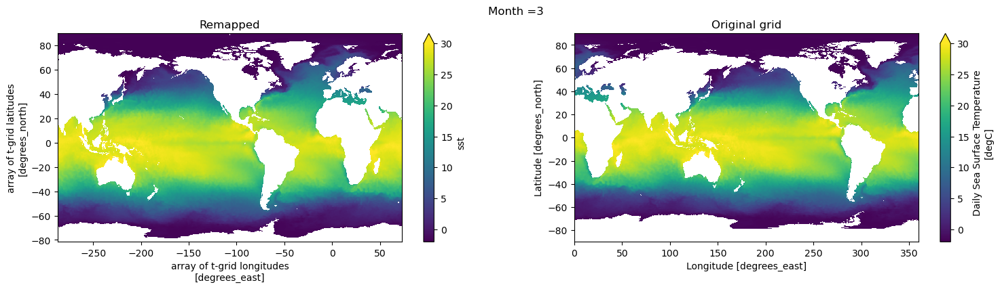
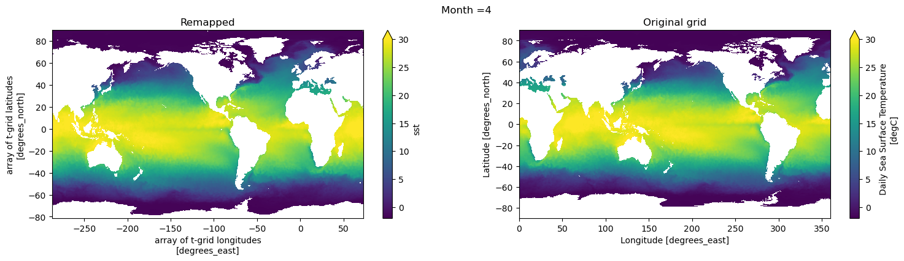
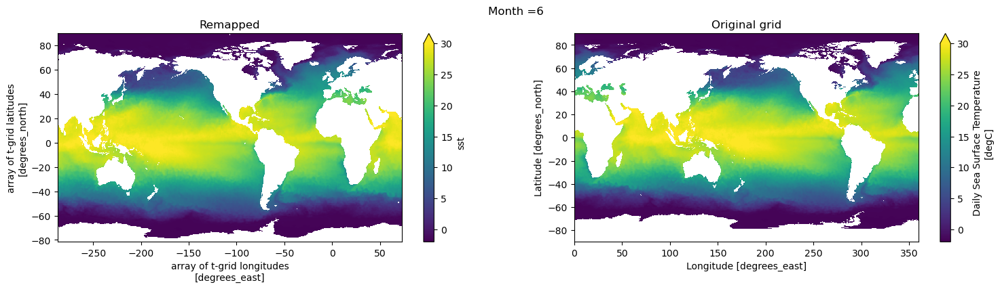
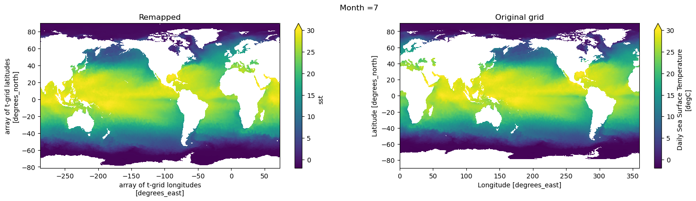
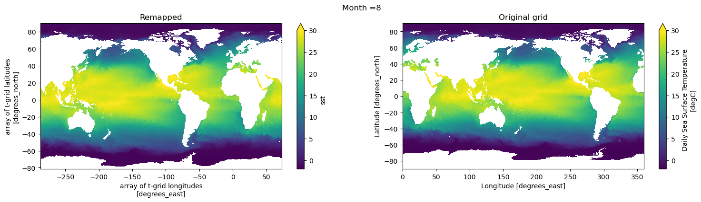
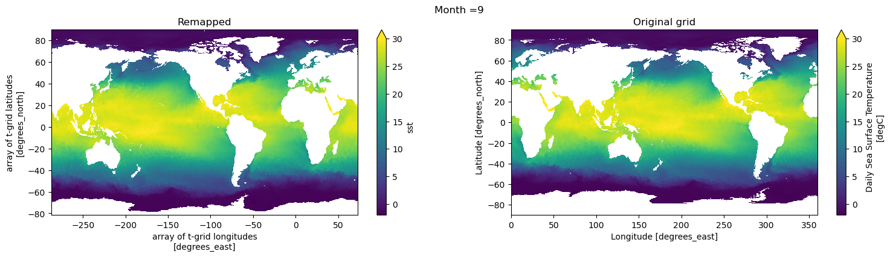
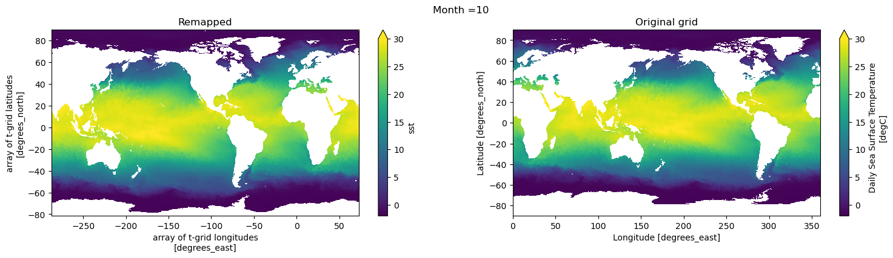
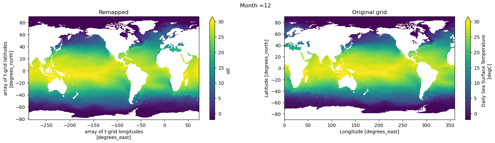

Remap OISST to tx2_3#
%matplotlib inline
import xarray as xr
import xesmf
import numpy as np
import datetime
import matplotlib.pyplot as plt
today = datetime.date.today().strftime("%y%m%d")
print(today)
260306
fname = '../mesh/tx2_3v3_grid.nc'
ds_out = xr.open_dataset(fname).rename({'tlon': 'lon','tlat': 'lat', 'qlon': 'lon_b',
'qlat': 'lat_b', 'nx' : 'xh', 'ny' : 'yh',
'depth' : 'z_l', 'tmask':'mask'})
ds_out
<xarray.Dataset> Size: 42MB
Dimensions: (yh: 480, xh: 540, nxp: 541, nyp: 481)
Dimensions without coordinates: yh, xh, nxp, nyp
Data variables: (12/20)
lon (yh, xh) float64 2MB ...
lat (yh, xh) float64 2MB ...
ulon (yh, nxp) float64 2MB ...
ulat (yh, nxp) float64 2MB ...
vlon (nyp, xh) float64 2MB ...
vlat (nyp, xh) float64 2MB ...
... ...
tarea (yh, xh) float64 2MB ...
mask (yh, xh) float64 2MB ...
angle (yh, xh) float64 2MB ...
z_l (yh, xh) float64 2MB ...
ar (yh, xh) float64 2MB ...
egs (yh, xh) float64 2MB ...
Attributes:
Description: CESM MOM6 2/3 degree grid
Author: Frank, Fred, Gustavo (gmarques@ucar.edu)
Created: 2026-03-05T14:49:28.971877
type: Glogal 2/3 degree grid fileinfile = '/glade/campaign/cgd/oce/datasets/obs/OI.SST.v2/monthly/sst.mean.????.??.nc'
ds_in = xr.open_mfdataset(infile)
ds_in
<xarray.Dataset> Size: 2GB
Dimensions: (time: 444, lat: 720, lon: 1440)
Coordinates:
* time (time) datetime64[ns] 4kB 1982-01-16 ... 2018-12-16
* lat (lat) float32 3kB -89.88 -89.62 -89.38 -89.12 ... 89.38 89.62 89.88
* lon (lon) float32 6kB 0.125 0.375 0.625 0.875 ... 359.4 359.6 359.9
Data variables:
sst (time, lat, lon) float32 2GB dask.array<chunksize=(1, 720, 1440), meta=np.ndarray>
Attributes:
Conventions: CF-1.5
title: NOAA High-resolution Blended Analysis: Daily Values using...
institution: NOAA/NCDC
source: NOAA/NCDC ftp://eclipse.ncdc.noaa.gov/pub/OI-daily-v2/
comment: Reynolds, et al., 2007: Daily High-Resolution-Blended Ana...
history: Mon Dec 23 22:15:20 2019: ncra -F -d time,1,31 sst.day.me...
references: https://www.esrl.noaa.gov/psd/data/gridded/data.noaa.oiss...
dataset_title: NOAA Daily Optimum Interpolation Sea Surface Temperature
NCO: netCDF Operators version 4.8.1 (Homepage = http://nco.sf....def regrid_tracer(fld, ds_in, ds_out, method='bilinear'):
regrid = xesmf.Regridder(
ds_in,
ds_out,
method=method,
periodic=True,
)
fld_out = regrid(ds_in[fld])#[0,0,:]#.where(ds_in.lat>ds_out.geolat.min())
return fld_out
Potential temperature#
sst = regrid_tracer('sst', ds_in, ds_out).rename('sst')
sst
<xarray.DataArray 'sst' (time: 444, yh: 480, xh: 540)> Size: 460MB
dask.array<astype, shape=(444, 480, 540), dtype=float32, chunksize=(1, 480, 540), chunktype=numpy.ndarray>
Coordinates:
* time (time) datetime64[ns] 4kB 1982-01-16 ... 2018-12-16
Dimensions without coordinates: yh, xh
Attributes:
regrid_method: bilinear# add coordinates
sst = sst.assign_coords(geolat=ds_out.lat, geolon=ds_out.lon)
sst
<xarray.DataArray 'sst' (time: 444, yh: 480, xh: 540)> Size: 460MB
dask.array<astype, shape=(444, 480, 540), dtype=float32, chunksize=(1, 480, 540), chunktype=numpy.ndarray>
Coordinates:
* time (time) datetime64[ns] 4kB 1982-01-16 ... 2018-12-16
geolat (yh, xh) float64 2MB -81.56 -81.56 -81.56 ... 50.27 50.11 49.99
geolon (yh, xh) float64 2MB -286.7 -286.0 -285.3 ... 72.97 72.98 73.0
Dimensions without coordinates: yh, xh
Attributes:
regrid_method: bilinearVisual inspection#
Make sure original and remapped plots look similar.
# visual inspection. Make sure original and remapped plots look similar
for t in range(12):
fig, axes = plt.subplots(nrows=1, ncols=2, figsize=(18,4))
sst[t,:,:].plot.pcolormesh(x='geolon',y='geolat',ax=axes[0], vmin=-2,vmax=30)
ds_in['sst'][t,:,:].plot.pcolormesh(ax=axes[1], vmin=-2,vmax=30)
axes[0].set_title('Remapped')
axes[1].set_title('Original grid')
plt.suptitle('Month ='+ str(t+1))
/glade/u/apps/opt/miniforge/envs/npl-2026a/lib/python3.13/site-packages/dask/config.py:786: FutureWarning: Dask configuration key 'allowed-failures' has been deprecated; please use 'distributed.scheduler.allowed-failures' instead
warnings.warn(










# Global attrs
sst.attrs['title'] = 'Monthly OISSTv2 remapped to tx2_3v3'
sst.attrs['references'] = 'https://www.esrl.noaa.gov/psd/data/gridded/data.noaa.oisst.v2.highres.html'
sst.attrs['author'] = 'Gustavo Marques (gmarques@ucar.edu)'
sst.attrs['date'] = today
sst.attrs['infile'] = infile
sst.attrs['url'] = 'https://github.com/NCAR/tx2_3/oisst'
# save
fname = 'oisstv2_to_tx2_3v3_{}.nc'.format(today)
sst.to_netcdf(fname)